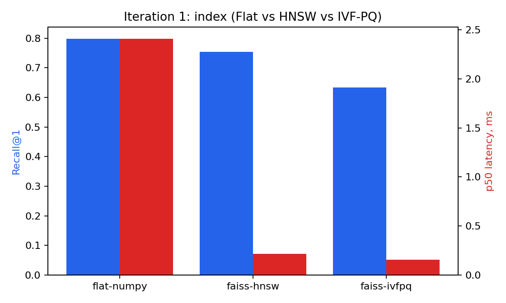
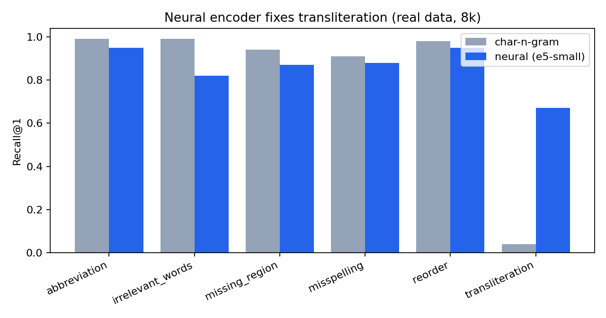

1
🏠 Нормализация адресов
через векторный поиск
Deep Learning for Search 2026 · Innopolis · вдохновлено AddrLLM (JD Logistics, SIGIR-класс, arXiv 2411.13584)
База: 623 116 адресов из 14 регионов РФ (OpenStreetMap, с координатами)
Грязная строка адреса → канонический объект с координатами
2
Вопрос 1 — ценность и кому нужно
Value proposition
Проблема: адреса приходят в свободной форме — опечатки, сокращения, транслит, пропуски, перестановки. Это ломает доставку, дедупликацию клиентов, геокодинг, KYC.
- Кому: логистика/e-commerce, банки/страховые (KYC), гос/ЖКХ, CRM (дедуп).
- Наше решение: open-source, self-hosted, офлайн — приватная альтернатива платному DaData.
- RAG-принцип: знания в индексе, не в весах → база адресов обновляется без переобучения модели.
Бизнес-эффект (AddrLLM на JD): −43% пересорта посылок, ~$2M/год экономии. Ошибка адреса = реальные деньги.
3
Задача
Это не классификация — это поиск (matching)
Дано: база N≥500k канонических адресов (с координатами)
Вход: грязный адрес q ("мск ленинский пр-т 12 к3", "ul Baumana 15")
Цель: c* = argmax cos(q, c) → канонический объект + id + координаты
Сигнал смешанный: семантический (сокращения, транслит) + символьный/лексический (опечатки, номера домов) → это ровно кейс для нейро-эмбеддингов + гибрида.
4
Вопрос 2 — архитектура
Архитектура системы
BUILD (офлайн):
OSM (Overpass) → канон.строки + координаты + метаданные
→ энкодер → векторы → индекс (HNSW / IVF-PQ)
QUERY (онлайн, <100 мс):
грязный адрес → энкодер → ANN(HNSW, косинус) → top-k
→ [опц.] нейро cross-encoder реранк → канонический объект + id + (lat,lon)
5 обязательных элементов: модель (эмбеддер), векторная БД (FAISS/Qdrant), индекс (HNSW/IVF-PQ), поиск (косинус + гибрид/реранк).
5
Вопрос 3 — технологии и обоснование
Ключевые технологии
| Компонент | Выбор | Почему (по замерам) |
|---|
| Данные | OpenStreetMap / Overpass | открыто, 623k / 14 регионов, есть координаты |
| Эмбеддер | multilingual-e5 / USER-bge-m3 | многоязычный → чинит транслит; 384-d (компактный) |
| Индекс | FAISS HNSW / IVF-PQ | ×110 быстрее / ×130 меньше памяти |
| Sparse | char-n-gram + BM25 | устойчивость к опечаткам / точные токены |
| Слияние/реранк | RRF + cross-encoder | только где сигналы комплементарны |
Каждый выбор подкреплён числом в сравнительной таблице, а не «по моде».
6
Вопрос 4 — экспериментальный пайплайн
Как ставим эксперименты и оцениваем
- Валидация без ручной разметки: генератор синтетического шума по таксономии AddrLLM (опечатки, сокращения, пропуск региона, мусор, перестановка, транслит) → каждый запрос привязан к известному id.
- Метрики (руками): Recall@1/5/10, MRR@10, nDCG@10, гео Acc@300/500m; + latency p50/p95/p99, память, время индекса.
- 3+ итерации: char-baseline → индекс/квантизация (Pareto) → нейро-энкодер → дообучение + geo-голова.
База 623k адресов (14 регионов); детальные прогоны — на CPU-выполнимых подвыборках 8k/80k. Всё логируется в results_*.json + графики → воспроизводимо (seed 20260605).
7
Результаты — эффективность индекса (реальные 80k)
Pareto: recall ↔ скорость ↔ память

Flat 0.82 / 1310 МБ / 31 мс → HNSW 0.74 / 0.28 мс (×110) → IVF-PQ 0.54 / 10 МБ (×130). IVF-PQ требует exact re-rank для восстановления recall (урок L9).
8
Результаты — главный выигрыш (Итерация 3)
Дообученный энкодер бьёт off-the-shelf

char-n-gram → off-the-shelf → дообученный
R@1 0.81 → 0.86 → 0.95 · transliteration 0.04 → 0.67 → 0.88 · nDCG 0.83 → 0.90 → 0.97 · Acc@500m 0.83 → 0.92 → 0.98
Контрастив (InfoNCE) на парах «грязный↔канон»; обучен на невиданных адресах (строки 8000+), eval — на других. 30k пар, 2 мин на GPU.
9
Результаты — честная находка
Гибрид/реранк — не серебряная пуля
| Система (8k) | R@1 | transliteration |
|---|
| нейро dense (один) | 0.88 | 0.62 |
| нейро + BM25 (RRF) | 0.83 | 0.25 |
| + лексический реранк | 0.84 | 0.10 |
Когда один ретривер сильно доминирует, слияние со слабым BM25 тянет вниз (0.88→0.83); лексический реранк ломает транслит (0.62→0.10) — латиница≠кириллица. Вывод (урок L8): гибрид/реранк применять с умом, реранк — только нейро cross-encoder.
10
Вопрос 5 — что эффективнее и почему
Рекомендуемая архитектура
ДООБУЧЕННЫЙ энкодер → HNSW (основа: R@1 0.95, 384-d, p50 0.02 мс)
+ int8/PQ + exact re-rank (память ×4–30 без потери качества)
+ нейро cross-encoder реранк (только на shortlist, где помогает)
- Почему: нейро-dense — лучший одиночный по recall и по транслиту, при меньшем векторе и суб-мс задержке.
- Почему не «всё сразу»: измерили — наивный гибрид и лексический реранк здесь вредят.
11
Вопрос 6 — требования к железу
Dev vs Inference
| Development (офлайн) | Inference (онлайн) |
|---|
| Что | эмбеддинг базы, дообучение, построение индекса | эмбеддинг запроса + ANN + реранк |
| Железо | GPU (или CPU медленнее); диск под модель ~0.5–2 ГБ | CPU-servable |
| Память | ~1–3 ГБ при построении | 80k нейро-векторов ≈ 123 МБ (int8/PQ ещё меньше) |
| Задержка | часы (один раз) | HNSW p50 0.02 мс поиска; полный путь <100 мс |
Квантизация + дистилляция → инференс без GPU.
12
Связь с наукой
Что взяли из AddrLLM и что — нет
- ✅ Взяли: идею geocoding-aware энкодера (эмбеддинг ∝ гео-расстоянию), таксономию ошибок, метрику robustness, retrieve-then-read.
- ❌ Не делали: SFT 7B-LLM + PPO/RL + кластер 10×H800 — вне бюджета. Мы фокусируемся на ретривере — векторном ядре, которое и есть предмет курса.
Честный scope: масштабировали вниз именно ту часть AddrLLM, что относится к векторному поиску.
13
Итог
Что сделано и что дальше
- Сделано: реальные данные OSM 623k / 14 регионов (+координаты), 3 итерации, дообученный энкодер (R@1 0.95, транслит 0.04→0.88), Pareto индексов/квантизации, гибрид+реранк, гео-метрика, сервис (FastAPI+UI), воспроизводимо, в git.
- Дальше: geo-голова (координаты в базе есть), дистилляция в tiny для CPU, замер дообученной модели на полной базе 623k.
Репозиторий: github.com/yathebest/project_dlc · демо: uvicorn service.app:app